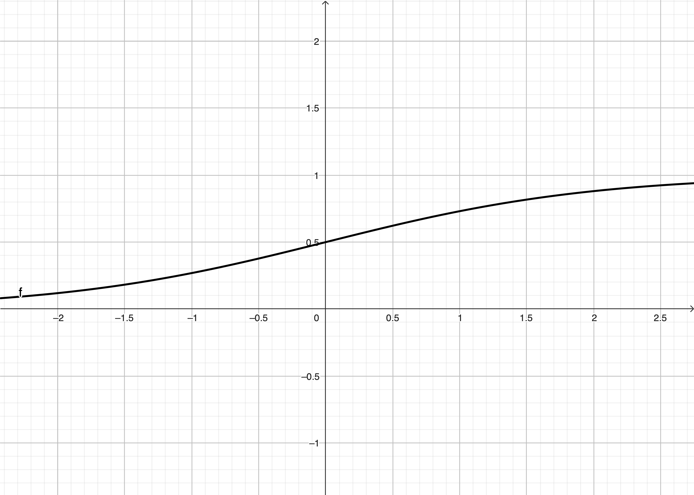

对数几率回归
对数几率回归算法的机器学习三要素：
- 模型：线性模型，通过sigmoid函数将线性模型映射到概率空间，输出值的范围为 (0,1)
- 策略：极大似然估计，信息论
- 优化：梯度下降法、牛顿法
二分类任务的输出标记：y∈{0,1} ，而预测值 z=wTx+b是实值。为了能够对应上，通过“嵌套”一个函数，把 z 转换为 y，即 0 或者 1。对数几率函数就是可以当作“嵌套”函数的函数。
对数几率函数：
y=1+e−z1

这个函数的值刚好在 (0,1) 之间，且 x=0 时的值是0.5。
ln(1−yy)=wTx+b
离散型随机变量 y∈{0,1} 取值为 1 和 0 的概率分别建模为：
p(y=1∣x)p(y=0∣x)=1+e−(wTx+b)1=1+ewTx+bewTx+b=1−p(y=1∣x)=1+ewTx+b1
为了便于分析，令 β=(w;b),x^=(x;1)，则上面的式子可以写为：
p(y=1∣x^;β)p(y=0∣x^;β)=1+eβTx^eβTx^=p1(x^;β)=1+eβTx^1=p0(x^;β)
使用“极大似然估计”来估计 w 和 b。那么由以上概率推导出随机变量 y∈{0,1} 的概率质量函数为：
p(y∣x^;β)=y⋅p1(x^;β)+(1−y)⋅p0(x^;β)或p(y∣x^;β)=[p1(x^;β)]y⋅[p0(x^;β)]1−y
似然函数和对数似然函数：
L(β)ℓ(β)ℓ(β)=i=1∏mp(yi∣x^i;β)=lnL(β)=i=1∑mlnp(yi∣x^i;β)=i=1∑mln(yip1(x^i;β)+(1−yi)p0(x^i;β))
因为：
p1(xi^;β)=1+eβTx^ieβTx^ip0(xi^;β)=1+eβTx^i1
所以：
ℓ(β)=i=1∑mln(1+eβTx^iyieβTx^i+1+eβTx^i1−yi)=i=1∑mln(1+eβTx^iyieβTx^i+1−yi)=i=1∑m(ln(yieβTx^i+1−yi)−ln(1+eβTx^i))
因为 yi∈{0,1}，所以：
ℓ(β)ℓ(β)=⎩⎪⎨⎪⎧∑i=1m(−ln(1+eβTx^i)),∑i=1m(βTxi^−ln(1+eβTx^i)),yi=0yi=1=i=1∑m(yiβTxi^−ln(1+eβTx^i))
因为损失函数通常是以最小化为优化目标，因此可以将最大化 ℓ(β) 转换为最小化 ℓ(β) 的相反数 −ℓ(β)。
此外还可以根据信息论进行推导。